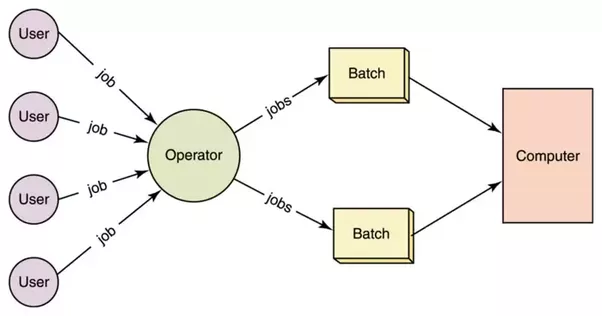
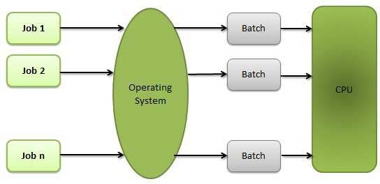
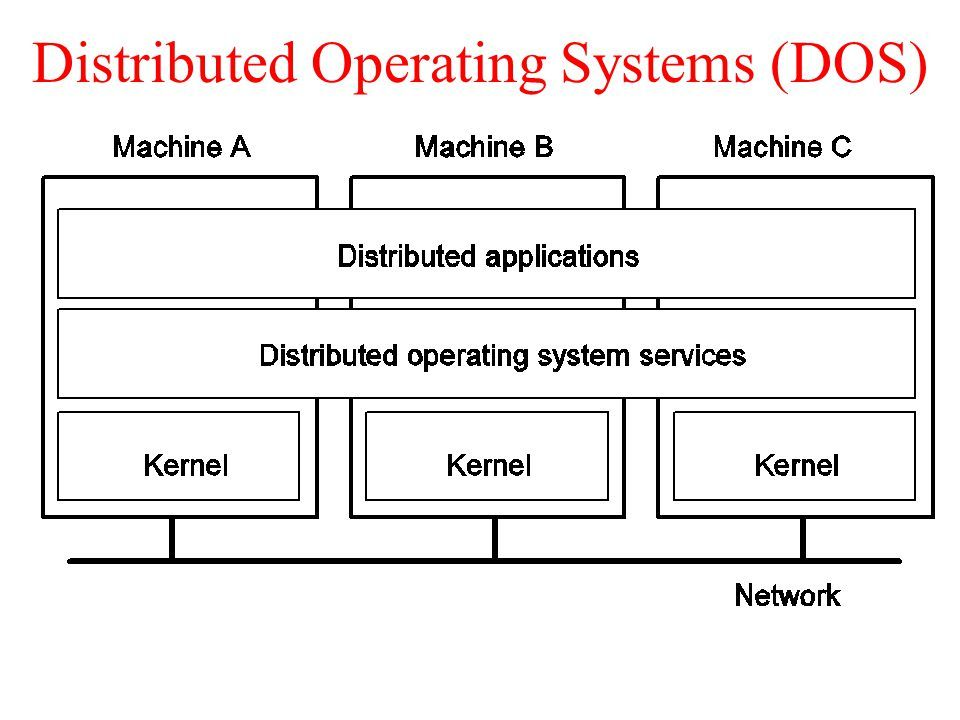

Time sharing Operating system: Time-sharing is a technique which enables many people, located at various terminals, to use a particular computer system at the same time. Time-sharing or multitasking is a logical extension of multiprogramming. Processor's time which is shared among multiple users simultaneously is termed as time-sharing.

Batch Operating system:: The users of a batch operating system do not interact with the computer directly. Each user prepares his job on an off-line device like punch cards and submits it to the computer operator. To speed up processing, jobs with similar needs are batched together and run as a group. The programmers leave their programs with the operator and the operator then sorts the programs with similar requirements into batches

Distributed Operating Systems: Distributed systems use multiple central processors to serve multiple real-time applications and multiple users. Data processing jobs are distributed among the processors accordingly.

Network Operating System: A Network Operating System runs on a server and provides the server the capability to manage data, users, groups, security, applications, and other networking functions. The primary purpose of the network operating system is to allow shared file and printer access among multiple computers in a network, typically a local area network (LAN), a private network or to other networks.
Real Time Operating System: A real-time system is defined as a data processing system in which the time interval required to process and respond to inputs is so small that it controls the environment. The time taken by the system to respond to an input and display of required updated information is termed as the response time. So in this method, the response time is very less as compared to online processing.